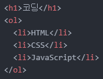
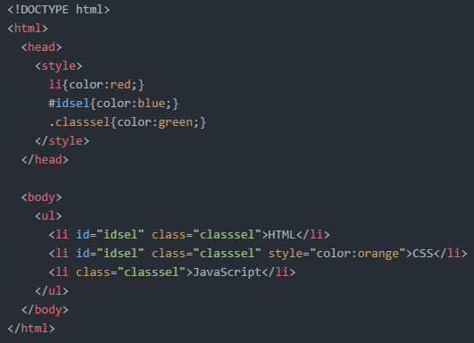

- 상속(Inheritance)에 대해 알아보기
- 캐스케이딩(Cascading)에 대해 알아보기
오늘은 상속에 대해서 알아보려고 합니다.
상속은 부모 태그의 속성을 자식 태그가 물려받는 것을 말합니다.
예를 들어 다음과 같은 코드가 있다고 해봅시다.

여기서 모든 텍스트를 파란색으로 바꾸려 한다면, 'li' 태그와 'h1' 태그 각각에 파란색을 적용시키면 될 것입니다.
그런데 이들보다 상위 태그인 'html' 태그에 파란색을 적용시키면 한 번에 모든 텍스트들의 색상을 바꿀 수 있게 됩니다.
이렇듯 속성은 생산성에 있어서 아주 중요한 개념입니다.
긴 코드보다 짧은 코드로 같은 결과를 내는 것이 일반적으로 좋은 코드이기 때문이죠.
그런데 상속이 지원되지 않는 속성들도 있답니다.
아래 링크를 클릭하면 상속을 지원하지 않는 속성들을 찾을 수 있습니다.
https://www.w3.org/TR/2016/WD-CSS22-20160412/propidx.html
다음은 캐스케이딩에 대해 알아보겠습니다.
CSS는 Cascading Style Sheet의 약자입니다.
즉, 캐스케이딩이라는 단어가 아주 중요하다는 것을 알 수 있습니다.
캐스케이딩은 하나의 태그에 대해서 다양한 효과(속성)가 영향력을 행사하려 할 때 우선순위를 어떻게 하는가에 대한 규칙을 나타냅니다.
그리고 그 우선순위는 다음과 같습니다.
예를 들어, 다음과 같은 코드가 있습니다.

보다시피 우선순위에 따라 'HTML'은 파란색으로, 'CSS'는 주황색으로, 'JavaScript'는 초록색으로 출력되는 것을 알 수 있습니다.
이러한 우선순위를 아는 것이 CSS의 기본이라고 할 수 있습니다.
오늘은 여기까지 하겠습니다.
그럼 내일도 화이팅!